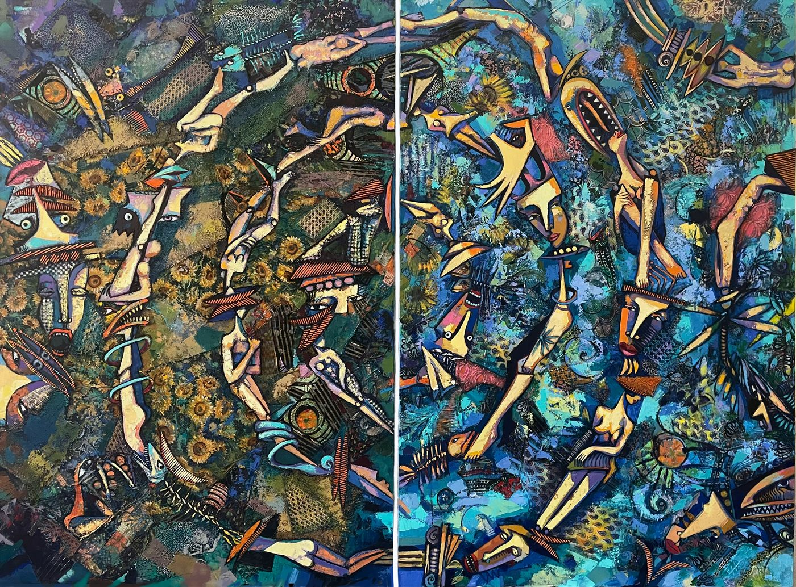
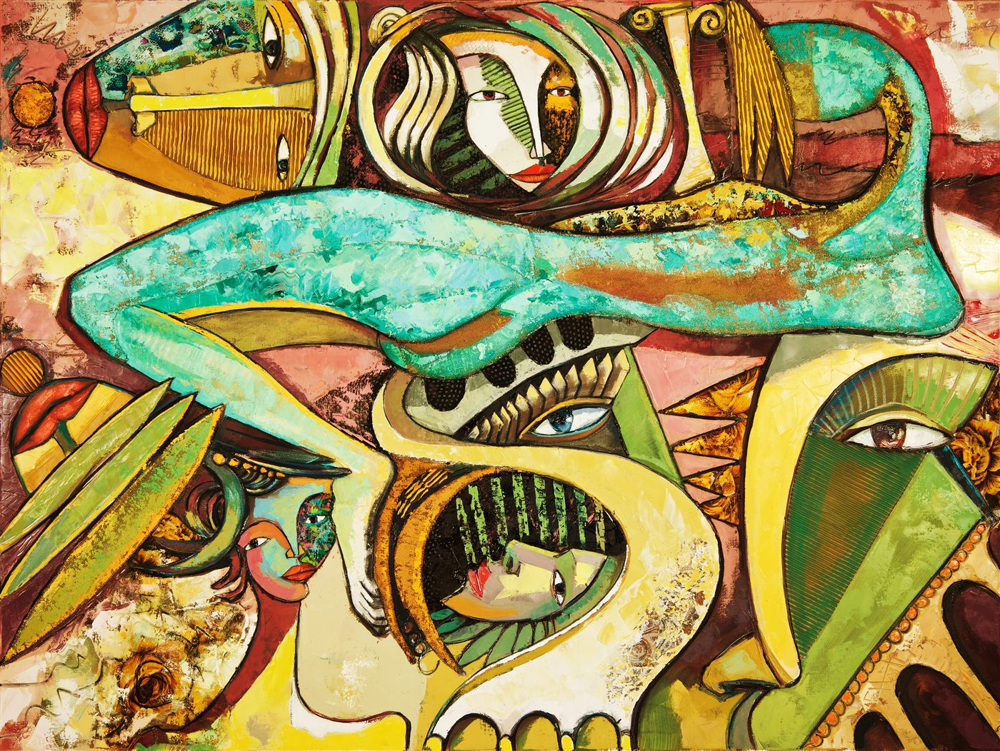
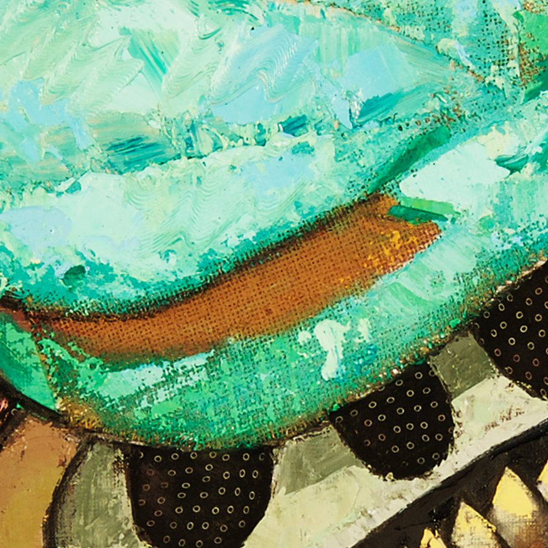

Ramón Haití Filiu · maqueta de trabajo, no es la web final · Parte 2 de 5
La misma portada con tres luces. Tipografía: Schibsted Grotesk (diseñada en Noruega) para todo, y Newsreader en cursiva solo para los títulos de obra, como en una cartela de museo. Ningún color propio: el único color es el cuadro.
Hueso frío, casi papel. El cuadro se lee como en la pared de una galería.

El cuadro brilla como bajo un foco. Más dramático; menos galería, más sala a oscuras.
El fondo sigue al sol real de Bergen: día, blåtime (la hora azul nórdica) y noche. Se calcula en el navegador, sin pedir nada a nadie. Se dice una sola vez, en el pie. Mueve la hora o cambia de fecha para verlo.
Cartela de museo, un solo botón discreto, y abajo un recorte del archivo original en su resolución completa: ahí se ve el collage, la tela y la pincelada que la foto entera aplana.

Detalle
Recorte del original de 5906 px, sin reescalar.

En la web real las fuentes van autohospedadas; aquí se cargan de Google solo para la maqueta.